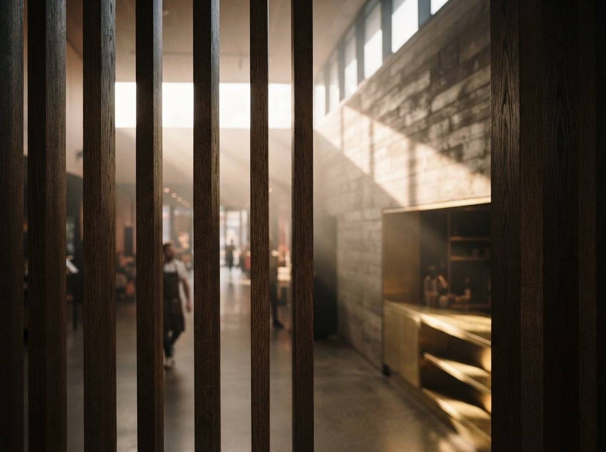

How does the Veras Revit plugin work?
Veras runs inside Revit as a plugin: open a 3D view, go to the Chaos tab, press Veras Start, pick a preset and click Render. Since Veras 4.8 it supports Revit 2024 to 2027, but not Revit LT. As listed on 28 October 2026, plans start at $16.90 a month billed annually, after a 14-day trial.
An earlier version of this page described Veras rendering a live mixed-use project in three ways and reported which one held the building. ArchiGen never ran that comparison, so the results, the table and the advice built on them are gone. What follows is a documentation review. Every claim below comes from a page opened on 28 October 2026, and each one is linked where it is used.
The Revit audience has been courted for a while. In December 2025 Bill Allen of Chaos was back on BIM After Dark Live, and The Revit Kid's replay post lists what he showed: Veras inside Enscape, selective edits that "swap a car, update materials, or refine a portion of a render," image-to-video, and a "new Nano-Banana render engine." Ten months on, the product has moved further than that episode suggested.

Installing it, then finding the Chaos tab
Setup is a desktop installer, not the usual App Store flow. Chaos's Veras FAQ says to close your CAD application and run the installer, which sets up the plugin; the Autodesk App Store help page, still published under the EvolveLAB name, says the same thing more tersely: run the MSI and follow the instructions.
Using it is six steps on that help page. Open Revit, go to a 3D view, open the Chaos tab in the ribbon, press Veras Start, optionally change the preset and adjust the Revit camera, then click Render. The Revit view is the camera. There is no second scene to set up.
Revit LT users are out. Asked on the EvolveLAB forum, a Chaos staff member answered that "Revit LT does not support plugins", and pointed LT owners to the Veras web app, which takes an uploaded image instead of the live model.
Which Revit versions does Veras support?
Revit 2024, 2025, 2026 and 2027. The Veras 4.8 release notes of 11 August 2026 are blunt: "This version ends support for Revit 2021, 2022 and 2023." Revit 2027 arrived slightly earlier, with Veras 4.7, which a staff reply in the Revit 2027 support thread confirmed on 23 July 2026.
One stale page to ignore: Chaos's own Revit plugin buyer's guide, last updated 18 June 2026, still says "Veras works with Revit through the Enscape plugin, which supports Revit 2021 and later." The release notes are newer. If your office is pinned to Revit 2023, the current plugin is not for you.
What it reads from the model
Chaos's case for the plugin rests on context. The same buyer's guide says Veras "reads your Revit model's geometry, materials, and camera angles directly," and names two controls that matter to anyone who has to defend an image later: a Geometry Override slider, which sets how closely the AI sticks to the model, and Render Same Seed, which holds a result steady across variations. The guide also calls Veras "the only AI rendering tool that works as a native plugin inside Revit." That is the vendor's claim about its rivals, and it is worth reading as one.
On data, the Veras FAQ says the plugin sends only "camera view and geometry snapshot" to the cloud, that processing runs on servers in the United States, and that project data is "never used for AI model training." A BIM manager will want that sentence in writing before the first render of a confidential scheme. Here it is.
From one engine to a model menu
Veras used to have one engine. Veras 4.0, announced on 10 February 2026, moved rendering onto Google's Nano Banana Pro and promised that prompts would be treated "as clear instructions" rather than loose suggestions. The FAQ now lists far more: Nano Banana 2 (Gemini 3 Flash), Nano Banana Pro (Gemini 3 Pro), Stable Diffusion, Veo 3.1 and Gemini Omni for video, Grok Imagine, and GPT-6 Astra and Claude Opus 5.5 for model generation. The product page puts the count at "30+ models."
For a Revit team the practical effect is that "the Veras look" is no longer one look. Two people in the same office, on the same plan, can pick different engines and get different buildings. Office standards now need a line about which engine is allowed for what.
What Veras 4.3 actually shipped
The earlier version of this article built its argument on Veras 4.3, which our Chaos Veras review covers in full. The 4.3 release notes, posted 2 April 2026, list three features. Design Lock is a new reference image type that "extracts the architectural design language from a reference image" and applies it to the render; Chaos put its success rate at 75 percent, which is refreshingly specific. Video Combine stitches several video renders into one output. Canvas Filters adjust brightness, contrast, saturation and blur on the canvas.
That last one is post-processing, not a control over how far the AI departs from the model. The old page called it "render fine-tuning" and treated it as a safety rail for BIM fidelity. The release notes do not support that reading, and they do not mention Revit at all.
Veras 5.2: the render talks back to the model
The newer release is the one Revit users should study. Veras 5.2, posted 24 September 2026, adds an agent that builds 3D objects from images and a Bake function that writes them into the host. In Revit, per the notes, "walls, floors and roofs become native Revit elements. Doors and windows are placed as door and window families." Cameras become perspective 3D views, materials become project materials, and anything without a native equivalent bakes as an Enscape proxy. Baking needs the 5.2 plugin; older plugins prompt an update.
For two years the question about AI renderers in Revit was whether the picture stayed faithful to the model. Veras 5.2 adds the reverse question: whether the model stays faithful to what the office drew. Generated walls with matched materials are still walls someone has to check, type by type, before they reach a sheet.
What does Veras cost for Revit users?
There is no separate Revit edition; one subscription covers every host. As listed on 28 October 2026, the Veras pricing section sells named licences with monthly credits:
| Plan | Billed annually | Billed monthly | Credits a month (Chaos's estimate) |
|---|---|---|---|
| Starter | $16.90/month ($202.80 a year) | $20.90/month | 500, about 50 Nano Banana 2 1K images |
| Pro | $29/month ($348 a year) | $59/month | 2,000, about 200 images |
| Ultra | Not listed | $127.20/month | 6,000, about 600 images |
Each credit pool is also quoted as roughly the same number of AI videos. The page offers a 14-day free trial and a 14-day money-back guarantee, with a footnote that matters: "Use of AI credits voids the right to a refund." Educational pricing is a separate switch on the same page, and a floating Pro licence appears in the plan data at $528 a year. Chaos's buyer's guide adds that Veras comes bundled with an Enscape Premium licence, so check what your office already owns before buying seats.
Plugin or export: what the documents settle
The documentation settles the plumbing. The plugin renders the Revit view you have open, sends a snapshot of it to the cloud, and returns the image in the same window; nothing is exported. It does not settle the craft question the old page claimed to answer, which is whether a Revit 3D view frames an eye-level shot as comfortably as SketchUp or Rhino. No public source we found measures that, and we have not tried it. For the wider seam between BIM and AI rendering, see our BIM-first AI stack guide, and our note on native integration versus file upload.
Veras began as a way to paint over a Revit model. It now proposes walls for it. Read the 5.2 notes before you let it.
Evidence note. This article is based on Chaos's Veras product, pricing and FAQ page; Chaos's Revit plugin buyer's guide and what's-new blog; the Veras 4.0 press release; the Veras for Revit listing and help page on the Autodesk App Store; Veras release notes and staff replies on the EvolveLAB forum (4.3, 4.7 and Revit 2027, 4.8, 5.2, Revit LT); and The Revit Kid's BIM After Dark Live replay post. All sources were opened on 28 October 2026 and are listed in full in the article's source file. ArchiGen did not test Veras, and no image on this page is Veras output. Prices are as listed on 28 October 2026 and can change.
No affiliate relationship with Chaos.